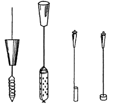
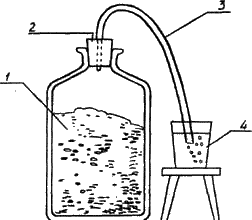

Самогон, водка и настойки. Пол подвала.

Пол подвала не должен быть земляным. Лучшим полом считается вымощенный песчаником со смазанными цементом швами. Погреб, в котором весь пол зацементирован, может оказаться, излишне сухим.
Принадлежности погреба
Лежни
Лежни, т. е. брусья, на которые помещаются бочки, делают преимущественно из дуба, так как дубовое дерево хорошо противостоит гниению и способно выдерживать большое давление. Лежни укладывают строго горизонтально. Этим значительно облегчается правильная установка и передвижение бочек.
Поперечные подкладки, которые поддерживают лежни, должны быть положены часто, чтобы при передвижении одной бочки другие не испытывали никакого потрясения, ведь различные потрясения более или менее нарушают правильный ход созревания вина.
Между стеной и лежнями должно быть оставленно такое расстояние, чтобы заднее дно бочки находилось от стены не менее чем на 50 см.
В некоторых погребах лежни могут быть заменены продольными возвышениями – стеночками. Иногда лежни цементируют. Такие устройства намного устойчивее деревянных подкладок, что немаловажно для качества будущего напитка.
Бочки
Лучшие и самые качественные бочки изготовляют из свежих дубовых клепок. Для того чтобы отличить свежую клепку от старой, что не всегда удается сделать по внешнему виду, – пробную клепку ударяют об острый камень. Если на месте удара она отломится ровно, то это доказывает, что она старая и не годится для посуды большой емкости. Если же от удара клепка отломится неровно (сильно расщепится по различным направлениям), то она свежая и пригодна для различной обработки.
Лучшей и более прочной считается та бочка, у которой клепки уже, т. е. при одной длине окружности имеется большее число клепок. У хорошей бочки клепки должны быть одинаковой толщины на всем своем протяжении. Утончение клепки в середине сильно уменьшает прочность бочки. В бочках большой емкости делают дверцы, для того чтобы иметь возможность проникать внутрь для очистки и осмотра поверхности.
Эти дверцы плотно притягиваются ввинченным в них железным винтом по дну, что позволяет герметически закрывать бочку. Но следует обратить особое внимание на то, чтобы головка винта не выступала внутрь бочки, т. е. винт не приходил в непосредственное соприкосновение с бочкой.
Железо крайне вредно действует на качество вина, и действие его настолько сильно, что даже такая незначительная частица, как шляпка винта, влияет на цвет и вкус напитка. Поэтому винт и другие железные части должны быть прикрыты либо дубовой пластинкой, либо каким-нибудь другим способом изолированы от вина.
Использование серы и смолы для этой операции непригодны: они обе сообщают вину посторонний запах.
Обручи
Обручи делают из железа или дерева. Железные обручи желательно сразу покрыть масляной краской. Это необходимо для того, чтобы они не ржавели.
Шпунт
Шпунт должен быть тщательно подобран к отверстию бочки во избежание ненужной процедуры – обертывания тряпкой, которая почти всегда является источником или, по крайней мере, хорошим проводником плесени и кислоты.
Длина шпунта должна быть рассчитана таким образом, чтобы его нижняя поверхность касалась вина, когда бочка закупорена. В том случае, если шпунт не касается вина, он ссыхается и пропускает воздух. Для того чтобы сделать деревянный шпунт непроницаемым для воздуха, его верхнюю и нижнюю поверхности обмакивают в растопленный парафин. Чистый парафин не растворяется в вине, поэтому не влияет на вкус и запах вина.
Кран
Обычно кран изготавливают из дерева. Лучше всего для этого подходит слива. Кран не рекомендуется делать из железа, в частности из меди. Медь легко окисляется и достаточно сильно влияет на качество и вкус напитка.
Окраска бочек
Иногда некоторые виноделы окрашивают бочки масляной краской, для того чтобы уменьшить испарение вина и сделать бочки долговечнее. Окраска действительно уменьшает испарение и продлевает срок службы деревянных бочек. Но этот процесс имеет достаточно серьезный недостаток: при окраске происходит закупоривание пор клепок. Это приводит к тому, что прекращается воздействие воздуха на вино и тем самым замедляется и нарушается правильный ход созревания напитка.
Форма бочек
Обычно бочкам придают либо круглую, либо овальную форму. Овальная форма делает бочку вместительнее, она требует меньше места для установки в помещении. В таких бочках вино лучше очищается, так как при отвесных стенах свободнее оседают нерастворимые частицы вина. Хотя в овальных бочках образуется более толстый слой осадка, по сравнению с бочками круглой формы. Это происходит потому, что в таких бочках осадок более подвержен разложению.
Долговечность бочки
Срок службы бочки зависит от многих условий. Это прежде всего качество материала, из которого она изготовлена. Условия хранения также сказываются на долговечности бочки.
Установка бочек
При установке бочек необходимо выполнять следующие условия:
1. Расстояние между бочкой и стеной должно быть не менее 50 см. Это делается для того, чтобы удобнее было осматривать заднее дно и при необходимости наклонять бочку.
2. При установке бочек располагать их таким образом, чтобы они не касались друг друга.
3. Расстояние от бочек до пола должно быть не менее 60 см.
4. Если бочки помещены в несколько рядов, то расстояние между рядами должно быть таким, чтобы было удобно ставить и выставлять бочки, не тревожа при этом другие.
Для того чтобы придать устойчивость бочкам при установке, следует подкладывать с обеих сторон по два трехгранных бруска.
Наклонение полных бочек
Во время ухода за вином довольно часто возникает необходимость слить вино с образовавшегося осадка. Та часть вина, которая находится ниже крана, может быть слита лишь в том случае, если бочку наклонить определенным образом. При выполнении этой операции нужно быть достаточно осторожным, так как следует наклонить бочку таким образом, чтобы не потревожить осадка и тем самым не помутить вина. Поэтому необходимо наклонять бочку плавно, без особых толчков и потрясений. Лучше всего использовать для этой операции домкрат.
Хранение пустых бочек
Бочонки, которые приходится оставлять пустыми, хотя бы на непродолжительное время, требуют также определенного ухода.
Прежде всего их сразу следует сполоснуть холодной водой. Оставить на некоторое время, дав возможность немного обсохнуть, затем подкурить серой. Бочку плотно закупорить и поставить на хранение. Причем каждый месяц следует повторять подкуривание серой. В том случае, если бочки хранятся в достаточно сыром помещении, то эту операцию следует проводить не реже одного раза в месяц, а если они находятся в сухом помещении – то один раз в два месяца.
Мастера советуют после парения бочки сполоснуть ее и сразу же подкурить серой. Затем оставить и дать стечь воде. Лучше всего ее поставить вниз открытым шпунтовым отверстием. Такое положение позволит избавиться от воды. Оставляют бочку на 4~5 часов. Когда емкость вполне высохнет, ее следует вновь подкурить и плотно забить шпунт.
Подкуривание бочек серой
Серники для подкуривания можно приготовить следующим образом. Взять глиняную посуду, поместить туда серу и расплавить массу на медленном огне. Но ни в коем случае смесь не следует доводить до кипения.
В расплавленную серу обмакивают полоски непроклеенной бумаги в 2–2,5 см шириной и примерно 12–15 см длиной. Сера медленно пристает к бумажке и остывает. Серник готов. Для получения и изготовления качественного серника нужно соблюдать следующие условия:
1. Необходимо взять совершенно чистую серу, обязательно желтого цвета, но не коричневого. Лучше всего, чтобы сера была в палочках, а не в порошках. Порошки зачастую содержат в своем составе различные примеси.
2. Серники должны быть достаточно тонкие, т. е. чтобы слой серы в них был тонкий и притом гладкий и блестящий, а не толстый, шероховатый и тусклый. Толстые серники достаточно неудобны в использовании. Они представляют то неудобство, что при горении сера растапливается и стекает на дно бочки, где крепко пристает к клепке и ее достаточно трудно удалить. Присутствие серы в бочке вредно отразится на вкусе и аромате вина. Чтобы получить тонкий серник, достаточно на некоторое время (очень короткое) обмакнуть бумажку в серу, а потом только провести по ней. Полоску бумаги обмакивают в серу в то время, когда она вполне расплавится, не ожидая ни пока она закипит, ни когда станет остывать. Если в оставшуюся серу погрузить полоску бумаги, то могут получиться довольно толстые серники.
3. В серу не следует добавлять различных пахучих веществ (как это иногда делается). Пользы они не приносят, а скорее, наоборот, могут серьезно навредить. Лучше не экспериментировать.
Для подкуривания бочки серник закрепляют на конце проволоки, зажигают и опускают в бочку до половины ее глубины. Закрывают бочку шпунтом и держат в ней серник до тех пор, пока сера не перестанет гореть. При выполнении операции необходимо следить за тем, чтобы холст не загорелся и не упал в бочку, так как обгорелые остатки сообщат бочке дурной запах, который потом переходит в вино. Иногда, если бочка долго стояла пустой, происходит так, что сера не горит в бочке. В этом случае воздух вдувают в нее обыкновенными мехами, пока газы, которые препятствуют горению, не будут заменены чистым воздухом, т. е. до тех пор, пока сера не станет гореть.
Чтобы при сжигании серника в бочку не попали обгорелые кусочки или накапала растопленная сера, при курении употребляют вместо простого проволочного крюка несложное приспособление, изображенное на рис. 5.
Бочки можно подкуривать не серниками, а непосредственным сжиганием серы. В железную чашечку насыпают серу и поджигают. Этот способ мало распространен, так как при частом употреблении чашечка быстро сгорает.

Рис. 5. Подкурники
Подкуривание бочек спиртом
Во Франции существует прекрасный обычай – подкуривать бочки спиртом. Употребляемый для этого спирт (или высококачественная водка) должен быть без малейшего признака сивушного запаха. Бочка, напитавшаяся сивушным маслом, непригодна для вина, так как вино примет эти нежелательные запахи и вкус. Сам процесс подкуривания проходит следующим образом. Нужно взять небольшой кусок сукна и обмочить в спирте. Закрепить на проволоке и поджечь. Опустить на проволоке примерно на ? глубины бочки и, подержав некоторое время, вынуть, пока не сгорел спирт, иначе сукно само может загореться и сообщить бочке неприятный запах гари.
Очистка бочек от плесени
Если бочки имеют даже слабый налет плесени, ее обязательно нужно удалить самым тщательным образом.
Плесень бывает двух видов: желтого и белого цвета. При стирании плесени желтого цвета на поверхности останутся черные пятна. Это говорит о том, что бочка заражена таким видом плесени, который невозможно удалить. Для вина такая посуда непригодна, так как напиток, помещенный в нее, неминуемо испортится, и исправить его нет никакой надежды.
Если при стирании плесени белого цвета пятен не остается, то она может быть удалена, не оставив никаких последствий. Для очистки таких бочек существует множество различных средств. Прежде всего надо иметь в виду, что такие бочки не следует парить до удаления из них плесени, иначе в них могут образоваться вещества с дурным запахом и вкусом, которые легко передаются вину. Поэтому вначале необходимо тщательно соскоблить плесень или каким-либо другим способом избавиться от нее. Затем ополоснуть бочку и уже после этого хорошенько пропарить.
Способы очистки бочек от плесени, которые мы приводим ниже, дают хорошие результаты.
Первый способ.Взять небольшое количество виноградных чубуков и сжечь их в бочке. После
этого внутренняя поверхность бочки слегка обуглится. Обугленный слой необходимо тщательно соскоблить. Затем бочку парят горячей водой, в которую предварительно кладут свежие дубовые стружки. В заключение бочку ополоснуть холодной водой.
Второй способчасто используется мастерами. В бочке снимается дно, и внутреннюю поверхность нужно хорошенько выскоблить и ополоснуть холодной водой. Затем вставить дно, выпарить бочку слабым раствором серной кислоты. Для этого на 1 ведро воды берется 12,8 г серной кислоты.
В течение 1–1,5 часа бочку катают в разные стороны, чтобы вся внутренняя поверхность была смочена раствором. После чего раствор удалить, а бочку перевернуть, чтобы стекла вода, и снова ее ополоснуть холодной водой.
Затем проделывают следующую операцию: на 1 ведро воды взять 2 кг костяного угля и все перемешать. Полученной смесью тщательно ополоснуть внутреннюю поверхность бочки, ополоснуть чистой водой и, перевернув бочку, дать воде стечь.
Когда бочка просохнет, рекомендуется подкурить ее серой.
Предлагается достаточно много средств, позволяющих очистить заплесневевшие бочки, но именно изобилие доказывает, что ни одно из них не помогает окончательно.
Иногда достаточно простого соскабливания плесени с поверхности, чтобы вполне очистить бочку. Но бывают случаи, когда никакими средствами не освободить бочку от запаха плесени. Все зависит от степени заражения бочки.
Для очистки заплесневевших бочек не разрешается употреблять извести, так как это может иметь неблагоприятные последствия.
Очистка прокисших бочек
Для очистки прокисших бочек используются различные способы. Вот один из них.
Бочку выжигают виноградными чубуками, затем тщательно соскабливают обгоревший слой. Для выпаривания применяют раствор: на ведро кипятка берут 3,2 кг соды, перемешивают, помещают в бочку на определенное время. Затем бочку вновь парят уже чистым кипятком, после чего ополаскивают холодной водой. Чтобы убедиться, достаточно ли удалена кислота, к внутренней поверхности бочки прикладывают лакмусовую бумагу. Если она примет красный цвет, это значит, что выделилась еще не вся кислота. В таком случае обработку бочки повторяют и продолжают до тех пор, пока синяя лакмусовая бумага не изменит цвет на красный.
Бывают случаи, когда после многочисленной обработки кислоту с поверхности удалить не удается. Это говорит о том, что бочка достаточно сильно прокисла и ее лучше не использовать в процессе приготовления и хранения вина.
Очистка бочек от гнили
Чтобы очистить бочку от гнили, ее следует выжечь виноградными чубуками (как в предыдущем случае). Если же гниль глубоко проникла в поверхность, то бочку необходимо пересыпать и перестрогать хорошенько все клепки, а в особенности их ребра.
Хотя приведенным способом бочка освобождается от запаха гнили, тем не менее такую бочку не следует считать вполне безопасной для вина, так как бывают случаи, при которых, несмотря на все старания и самый тщательный уход, она все же сообщает вину гнилостный привкус.
Устранение запаха пустых бочек
Бочки, которые долгое время лежали пустыми и регулярно не подкуривались серой, принимают неприятный запах, который впоследствии передается вину и портит как его аромат, так и вкус. Для устранения этого, как и всякого другого неприятного запаха, мы предлагаем следующее средство.
Для очистки 40-литровой бочки на полведра воды кладут 150 г поваренной соли, 100 г перекиси марганца в порошке и 240 г серной кислоты. Все тщательно перемешивают. Полученный раствор помещают в бочку, качают в разные стороны, после чего оставляют на 3–4 часа в покое. По истечении этого времени раствор удаляют и полощут бочку до тех пор, пока вода не станет вытекать без запаха и постороннего вкуса. Если после первой очистки не удастся избавиться от запаха, то операцию следует повторить.
Приготовление бочек из-под красного вина для белого
Чтобы очистить бочки, делают следующее: в двух ведрах кипятка растворяют 3,2 кг соды. Как только вся сода растворится, раствор помещают в бочку и парят им в течение часа. Затем бочку опорожняют, опять парят уже чистым кипятком и, ополоснув холодной водой, дают просохнуть. После этой операции бочка из-под красного вина будет пригодна для белого.
Очистка бочек от винного камня
Винный камень представляет собой твердый кристаллический осадок, который образуется в процессе брожения виноградного сока на стенках бочек и сосудов – это калиевая соль винной кислоты.
Оседающий на внутренней поверхности бочки винный камень способствует развитию болезни вина, виннокаменному брожению, вследствие чего следует ежегодно удалять винный камень. Для этого вынимают дно бочки, тщательно соскабливают винный камень, затем бочку ополаскивают холодной водой, добавив немного серной кислоты (на 100 частей воды берется одна часть кислоты).
Очистка бочек от дрожжей
Часто случается, что к нижним клепкам пристают осевшие дрожжи, притом так сильно, что ни от полоскания, ни от парения они не отстают. В этом случае следует вынуть дно бочки, тщательно соскоблить дрожжи, а затем вставить дно. Выпаривать бочку желательно раствором двусернокислой извести. На полведра воды следует взять 65–70 г двусернокислой извести, тщательно размешать. Пропарив хорошенько этим раствором бочку, опорожнить и дать ей просохнуть. Затем ополоснуть раствором Ѕ столовой ложки соли на полведра воды и, наконец, чистой холодной водой и дать высохнуть.
Общие правила ухода за бочками
1. Как только бочка освободится от вина, ее необходимо немедленно вымыть и подкурить серой.
2. Бочку следует подкуривать серой каждый месяц или один раз в два месяца.
3. При обработке бочки серной кислотой следует запомнить, что кислоту нужно влить в воду, но ни в коем случае не наоборот.
Бродильный чан
Бродильные чаны лучше всего делать из дуба в форме или усеченного конуса, или бочки. Форма бочки придает несравненно большую прочность чану.
Величину чана рассчитывают так, чтобы он наполнялся предназначенной для брожения массой не более как в один день, сусло должно бродить равномерно. А это достигается только одновременным наполнением чана.
При определении размера следует иметь в виду, что чан не наполняют более чем на 5 /6 емкости. Сусло может перелиться, так как в процессе брожения увеличится его объем.
Бродильные чаны бывают двух видов: открытые и закрытые. Первые употребляются для открытого, вторые – для закрытого брожения. Чаны, как и бочки, производят круглыми или овальными.
В процессе брожения может быть использована и стеклянная посуда. На рис. 6 показано это устройство.
Стеклянная бутыль закрывается пробкой или затвором. Это устройство препятствует попаданию воздуха в емкость с бродящим вином. Конструкции затворов могут быть различными. Их можно приобрести в магазине или сделать самим.

Рис. 6. Бродильный чан:
1 – бродящее вино; 2 – резиновая пробка, имеющая внутри стеклянную трубку; 3 – резиновая трубка; 4 – стакан, наполненный дистиллированной водой
Чаще всего это резиновая пробка, через нее продета стеклянная трубка, на которую надевается резиновая. Другой конец этой трубки опущен в банку или стакан, куда наливают дистиллированную воду.